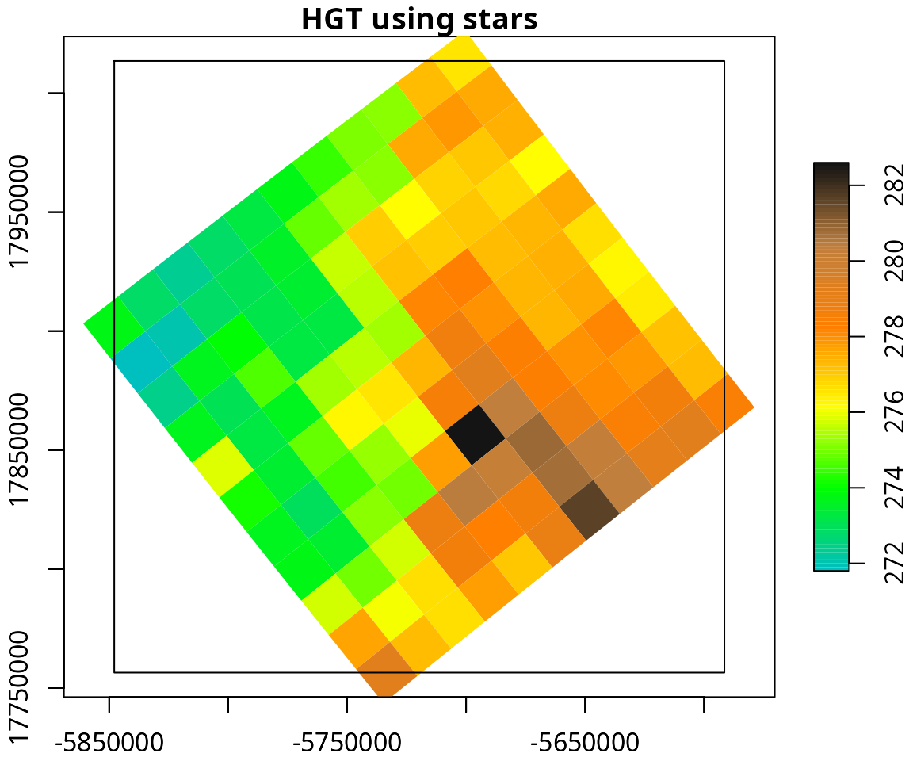

Here we attempt to provide useful code to generate figures from WRF outputs based on known galleries. For instance, NCL and WRF-Python provides extensive examples for plotting WRF outputs. Therefore, we aim to replicate some of these. Our approach to read wrfout files is based on eixport which relies r packages with GDAL bindings such as raster and stars. We do not try to provide a full gallery, instead, some basics and necessary plots to inspire other R used and receive more examples so share with the community.
library(eixport)
#> The legacy packages maptools, rgdal, and rgeos, underpinning the sp package,
#> which was just loaded, will retire in October 2023.
#> Please refer to R-spatial evolution reports for details, especially
#> https://r-spatial.org/r/2023/05/15/evolution4.html.
#> It may be desirable to make the sf package available;
#> package maintainers should consider adding sf to Suggests:.
#> The sp package is now running under evolution status 2
#> (status 2 uses the sf package in place of rgdal)
library(raster)
#> Loading required package: sp
library(stars)
#> Loading required package: abind
#> Loading required package: sf
#> Linking to GEOS 3.11.1, GDAL 3.6.2, PROJ 9.1.1; sf_use_s2() is TRUE
library(cptcity)
library(sf)Based on NCL:
wrfo <- "/media/sergio/ext5/WRF4/WRF/test/em_real/wrfout_d01_2014-10-03_00:00:00"Reading HGT from wrfout
HGT <- wrf_get(wrfo, "HGT", as_raster = T)
HGT <- HGT[[1]] # by default one variable with each time, so we select oneAdding coastlines and cropping for our study area
library(rnaturalearth)
#> Support for Spatial objects (`sp`) will be deprecated in {rnaturalearth} and will be removed in a future release of the package. Please use `sf` objects with {rnaturalearth}. For example: `ne_download(returnclass = 'sf')`
cl <- ne_countries(scale = "small", returnclass = "sf")
cl <- st_transform(cl, 31983)
HGT <- st_transform(st_as_stars(HGT), 31983)
cl <- st_cast(st_crop(cl, HGT), "LINESTRING")
#> Warning: attribute variables are assumed to be spatially constant throughout
#> all geometries
#> Warning in st_cast.sf(st_crop(cl, HGT), "LINESTRING"): repeating attributes for
#> all sub-geometries for which they may not be constantFind colour palette for elevation
find_cpt("elevation")
#> [1] "gmt_GMT_elevation" "grass_elevation"
#spplot(HGT, main = "HGT using spplot", scales=list(draw = TRUE),
# col.regions = cpt("grass_elevation"),
# sp.layout = list("sp.lines", as_Spatial(cl), col = "black"))
cols <- classInt::classIntervals(HGT$HGT, n = 100, style = "pretty")
plot(HGT, axes = T, main = "HGT using stars", col = cpt("grass_elevation", n = length(cols$brks) - 1), breaks = cols$brks, reset = F)
plot(cl$geometry, add= T, col = "black")